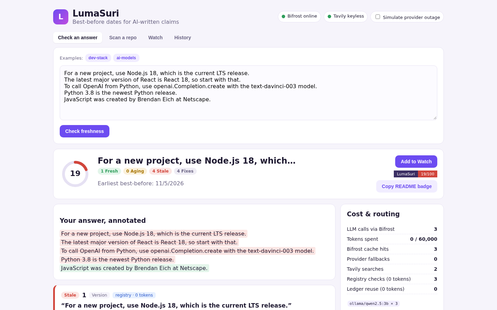
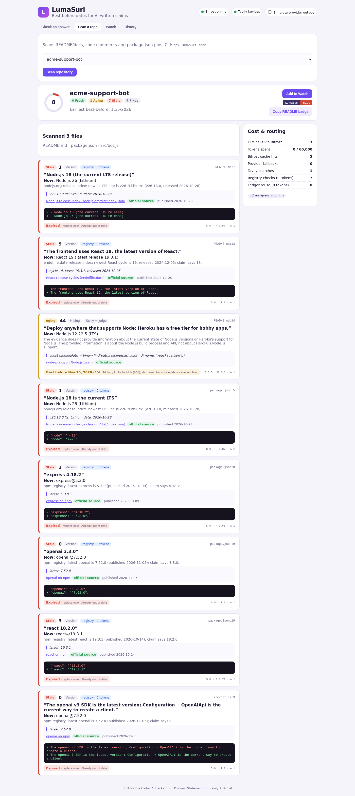

Best-before dates for AI-written claims.
Tavily live verificationBifrost LLM gatewayAnswers + whole reposCombines support, evidence recency and source authority. Every verdict quotes the exact sentence from a live source.
Based on the source's real release cadence and how fast that kind of fact decays. It tells you when to re-check.
Stale claims come with a one-line fix for the exact file and line. You review it; LumaSuri never edits files itself.
LumaSuri Watch keeps saved answers and repos. When a claim passes its best-before date, Watch re-verifies it and shows what changed since you saved it.

Web app, CLI and an OpenAI-compatible guard proxy.
lumasuri scan . --fail-under 60 works as a CI checkQ = 0.6·Recency + 0.4·Authority
supported 60+40Q · unclear 30+20Q · contradicted 15(1−Q)
min(category half-life, measured release cadence)
unclear ÷ 3 · contradicted = expired now
extra_fields6accuracy on 16 labeled current/stale claims, with a 3B local model
claims settled by registries with zero LLM tokens
stale claims found in the demo repo (README, code comments, package.json) with only 3 LLM calls and 7 fix diffs

The 2 misses ("Bard", "Twitter CEO") came from the small local judge trusting older pages. Switching the judge to a stronger model through Bifrost is one environment variable.
node scripts/eval.mjs7| Fact-check chat tools | Doc-drift linters | LumaSuri | |
|---|---|---|---|
| Checks AI answers | ✓ | — | ✓ |
| Checks repos (docs, comments, pins) | — | ✓ (code vs docs) | ✓ (vs the live world) |
| Predicts expiry (best-before) | — | — | ✓ from release cadence |
| Re-checks over time + "what changed" | — | on commit | ✓ Watch |
| Rejects verdicts it can't quote | rarely | n/a | ✓ evidence lock |
| Zero-token deterministic path | — | partial | ✓ registries + ledger |
GitHub Action that posts fix diffs on PRs · browser extension for ChatGPT/Gemini · team Watch digests · more registries (Maven, crates, Go, Docker Hub)
Know what your AI got right, and how long it stays right.
github.com/dioxaaa/lumasuriBuilt for the Global AI Hackathon (HackCulture × Geek Room) · Problem Statement 06 · Tavily + Bifrost by Maxim AI